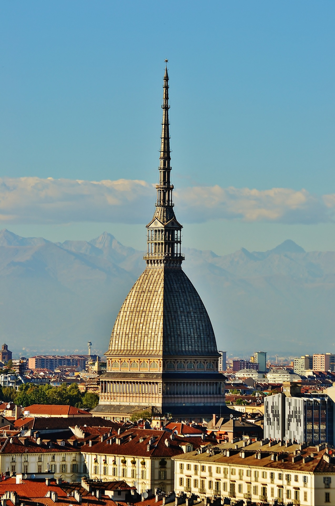

Il Nostro Viaggio
Cinque giorni indimenticabili tra le ATP Finals, cultura italiana e momenti di svago

Prima Destinazione
Torino: Tennis & Tradizione
Iniziamo il nostro viaggio a Torino, la città elegante che ospita le ATP Finals. Esploreremo le venue del torneo, godremo della cucina piemontese e ci immergeremo nella cultura torinese.
-
Partite ATP FinalsLe migliori partite di tennis al Pala Alpitour
-
Gastronomia PiemonteseRistoranti tipici e specialità locali
-
Esplorazione CittàMonumenti, musei e vita notturna

Seconda Destinazione
Milano: Moda & Modernità
Concludiamo il viaggio a Milano, la capitale italiana della moda e del design. Scopriremo i luoghi iconici della città, lo shopping di lusso e la vibrante scena urbana milanese.
-
Duomo & Centro StoricoI luoghi più iconici di Milano
-
Shopping & DesignBoutique di lusso e quartieri alla moda
-
Aperitivo & Vita NotturnaNavigli, Brera e la movida milanese